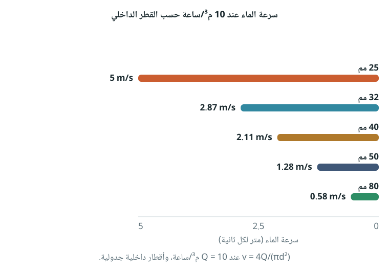

كيف يحدد التدفق وسرعة الجريان قطر الأنبوب؟
Pipe sizing is a velocity decision
ينخفض متوسط سرعة الجريان عند زيادة القطر الداخلي مع ثبات التدفق. يقارن المثال بين قطرين ويبيّن دور السرعة وفقد الضغط في الاختيار.
المصمّم يختار الأنبوب بين ضغطين متعاكسين: أنبوب ضيق أرخص في المعدن لكنه يرفع السرعة، والسرعة ترفع فقد الاحتكاك بنسبة تربيعية تقريبًا وتضيف تآكلًا وضجيجًا ومطرقة مائية عند الإغلاق. الأنبوب الواسع يخفض كل ذلك لكنه يضاعف الكلفة والمساحة. النطاق العملي للماء في المباني بين 1 و2 متر في الثانية، وفوقه يبدأ الضجيج في الشبكات الصغيرة.
كيف تعمل الظاهرة؟
التدفق الحجمي ثابت عبر المقطع، فالسرعة هي التدفق مقسومًا على المساحة. المساحة تتناسب مع مربع القطر، لذا تنصيف القطر يضاعف السرعة أربع مرات. وفقد الاحتكاك في دارسي يناسب السرعة تربيعيًا، فيصير تنصيف القطر ضغطًا مفقودًا ستة عشر ضعفًا تقريبًا — ولهذا يُشعر بخطأ التصغير في فاتورة المضخة لا في الرسم.
العلاقة بالأرقام
عند 10 م³/ساعة: ماسورة 25 مم تعطي 5.0 م/ث، و32 مم 2.9، و40 مم 2.1، و50 مم 1.3، و80 مم 0.6. الحد المقبول 1.5 م/ث يقع بين 40 و50 مم في هذا المثال، والقرار الاقتصادي عادةً يختار 50 مم لأنه يترك هامشًا للتوسّع دون تغيير الشبكة.
مفاهيم متقاربة
قطر الأنبوب الاسمي ليس القطر الداخلي: الجدول يقاس بالسماكة، فالفرق بين 40 مم اسمي و40 مم داخلي قد يبلغ ميليمترات تحرّك السرعة نسبة محسوبة. التصميم يستخدم القطر الداخلي دائمًا، والتسمية التجارية لا تصلح للحساب.
حدود التطبيق
النطاق 1–2 م/ث قاعدة إرشادية لا حدًّا فيزيائيًا: خطوط الشفط تُخفَّض لتفادي التكهّف، وخطوط الإطفاء تُرفع لضمان الرشّ، وأنابيب الطين تحتمل سرعة أعلى للتخلص من الترسيب. والحساب هنا لمائع واحد وقطر واحد، ولا يشمل فقد الرأس الكلي.

| الكمية | القيمة | المصدر |
|---|---|---|
| سرعة الماء في ماسورة 25 مم عند 10 م³/ساعة | 5.0 m/s | [1] |
| السرعة في ماسورة 50 مم بنفس التدفق | 1.28 m/s | [1] |
| السرعة في ماسورة 80 مم بنفس التدفق | 0.58 m/s | [1] |
| نسبة الزيادة في فقد الاحتكاك عند تنصيف القطر | 16 مرة | [2] |
المصادر
- 1 Engineering ToolBox — Flow Velocity in Water Pipes — Engineering ToolBox. www.engineeringtoolbox.com/flow-velocity-water-pipes-d_385.html · اطُّلع عليه 2026-11-16
- 2 OpenStax, College Physics 2e — Flow Rate and Its Relation to Velocity — OpenStax. openstax.org/books/college-physics-2e/pages/12-1-flow-rate-and-its-relation-to-velocity · اطُّلع عليه 2026-11-16
- 3 OpenStax, College Physics 2e — Viscosity and Laminar Flow; Poiseuille's Law — OpenStax. openstax.org/books/college-physics-2e/pages/12-4-viscosity-and-laminar-flow-poiseuilles-law · اطُّلع عليه 2026-11-16
راجعه: مراجعة آلية — ديوان المعرفة (أرقام محسوبة + مصادر متحققة) 2026-11-16 · 2026-11-16 · آخر تحديث 2026-11-17
رجوع إلى المقالات